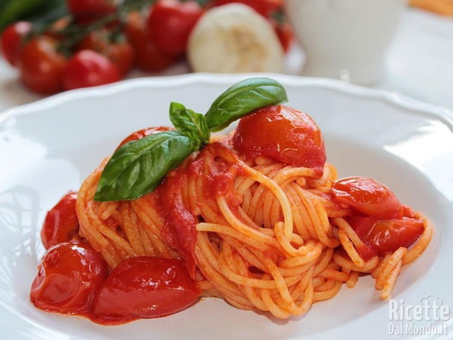

Spaghetti with pomodoro

Description
This is one of the most famous Italian dishes, and one you can make easily.
Ingredients
- 500 g of Italian Spaghetti
- 200 g of fresh tomatoes
- 50 g of salt
- 50 cl of olive oil
- 20 g of garlic
- some leaves of basil
Steps
- Put 2 lt of water in a pot and heat it
- Cut the tomatoes in little pieces
- Put the tomatoes in a pan, with a little bit of oil and garlic
- Add salt, keep squashing tomatoes until you have a cream
- Add some leaves of basil to the sauce
- Put the spaghetti in the boiling water and wait until they're ready
- Put the cooked spaghetti in the pan with the tomatoes, heat and serve